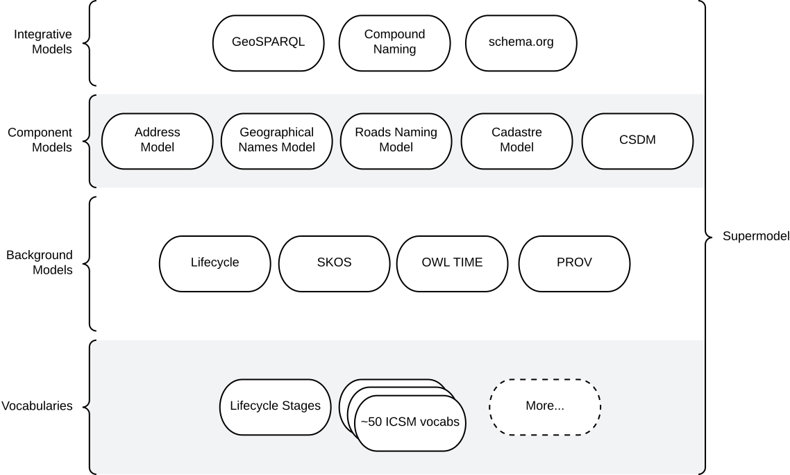

This 'Supermodel' is a set of data models used by Queensland Spatial Information to integrate data from formerly separate systems into an interoperable whole.
1. Metadata
IRI |
|
Title |
QSI Supermodel |
Description |
This is an overarching model - a Supermodel - used to integrate multiple, individual, models together for use within a particular scenario. |
Created |
2022-03-13 |
Modified |
2026-11-11 |
Issued |
0000-00-00 |
Creator |
KurrawongAI, for QSI |
Publisher |
|
License |
|
Code Repository |
2. Introduction
Multiple fundamental spatial datasets in Queensland have had system upgrades and been remodelled to modernise their tools and content structure and to align them better with one another. For example, the Address and Geographical Names data have been moved from old, separate, relational databases into a single modern graph database and cadastral information has had its underlying spatial technology upgraded. The Address, Geographical (Place) Names and Cadastral data models have been updated to either directly use, or to make public correspondences to, the "Background Models" in the overview diagram above.
For all datasets in all systems, their codelists, lookup values and feature types have been updated into stand-alone controlled vocabularies, many of which are standardised with other ANZ jurisdictions and published by ICSM.
By using/corresponding to Background Models and using standard terms from Vocabularies, the "Component Models" for each major QSI dataset share common structural patterns and values such that they can be cross-queried and used together in many ways. For example, you can query the combined system for an Address and get any Geographical Names that are part of it and their spatial extents, as well as the Property grouping of cadastral parcels it is an address for and their spatial extents.
In addition to component system upgrades and model upgrades, a number of new web services and data platforms have also been implemented by QSI to make using these now harmonised models together much easier at a technical level: single access points, etc.
2.1. Modelling System
All the models in this Supermodel set are implemented using the Web Ontology Language (OWL). OWL is a very widely used, standardised, formal modelling language. Unlike UML models, OWL models natively have machine-readable forms allowing data made according to them to be automatically validated and processed into databases.
The Supermodel’s constituent models are related to one another using The Profiles Vocabulary (PROF) which provides properties to indicate when and how one model reuses - "profiles" - another. PROF also links models to validators created to test data claiming conformance to them.

2.2. Model Roles
The multiple models that make up this Supermodel have different roles: Background Model, Component Model, Foreground Models etc. These roles describe whether data is expected to be created according to them directly or perhaps indirectly - via conformance to other models.
All the models in this Supermodel, regardless of role, have been selected to work well together and, for example, all Foreground Models conform to Background Models.
2.3. Modelling Example
Data created according to Foreground Models must conform to the Background Models of this Supermodel too. This is usually straightforward since the Foreground Modelss have been designed with this in mind.
Here is an example:
-
GeoSPARQL is a Background Model that defines
FeatureandGeometryobjects and their relations and representations -
Cadastre Model is a Foreground Models that defines kinds of cadastral unit, such as
Parcel -
Compound Naming Model is a Background Model that defines names for
Featureobjects
Using these models, the general pattern for assigning names to features is:

We also have:
-
Address Model is a Foreground Models that defines
Addressobjects and their relations toFeatureobjects.
Using the Address Model and pattern in the image above, here is an example of an address modelled according to all these models:
EXAMPLE: Yundah
Here is an example of a real Queensland address, 72 Yundah St, Shorncliffe, using Address, Cadastre & Geographical Names data, presented according to the elements in the Integrative Model overview figure, above.

A complete Address has much more information than this, such as Geocodes and Lifecycle stages, but this example shows the Address / Parcel main link between the Address Model and Cadastre Model.
2.4. Definitions
Here is a list of terms and acronyms used in this document.
- Background Model
-
A role within a Supermodel for fundamental or generic models that may or may not have data created conforming to it directly.
- Component Model
-
A role within a Supermodel for the models of individual datasets or systems' content. These models must conform with the Background Models.
- Compound Name
-
The class of objects for "a literal value, or objects that can be interpreted as literal values, that describe or name a Feature", according to the Compound Naming Model.
- Domain Model
-
A model of a particular conceptual subject which is a subset of a Supermodel’s overall area. For example, within spatial information, a model of Place Names could be a Domain Model.
- Feature
-
The class of object for "Anything spatial (being or having a shape, position or an extent)", according to GeoSPARQL.
- Foreground Models
-
A role within a Supermodel for a Domain Model and all Component Models indicating that it is expected to be used directly, that is, have data created conforminng to it. This is contrasted with Background Model.
- Geometry
-
The class of object for "A coherent set of direct positions in space", according to GeoSPARQL.
- IRI
-
Internationalized Resource Identifiers (IRIs) are Internet protocol standard identifiers used to identify, and often to link to representations of, resources. IRIs add internationalisation (use of different character sets to) Uniform Resource Identifiers (URIs) which are a superset of Uniform Resource Locators (URLs). Where URLs - web addresses - must link to resources, URIs often do but need not. [ref]
- profile
-
"A standard that constrains, extends, combines, or provides guidance or explanation about the usage of other standards" according to The Profiles Vocabulary.
- Supermodel
-
A set of integrated data models used with defined roles used to make multiple datasets interoperable.
- Unified Modelling Language, UML
-
A general-purpose visual modeling language that is intended to provide a standard way to visualize the design of a system. [ref]
- Vocabulary
-
A controlled set of defined terms. Within Supermodel contexts, all vocabularies reuse and extend the SKOS vocabulary model.
- Web Ontology Language, OWL
-
A widely used international standard modelling language that allows for machine-readability of models.
- Well-Known Text
-
A text markup language for representing vector geometry objects. WKT was defined in ISO19125-1 and extended by GeoSPARQL to allow for Spatial Reference Systems.
2.5. Doc Structure
The structure of this document and the roles of each part are as follows:
-
Metadata - Metadata about this document
-
Introduction - An introduction to the Supermodel concept and this particular Supermodel
-
Models - The specific models within this Supermodel
-
Annex A: PID Rules - Rules for the Persistent Identifiers (PIDs) to be used by data wishing to conform to this Supermodel
-
Annex B: Validation - How to validate data wishing to conform to this Supermodel
-
References - All the important reference standards and models for this
3. Models
3.1. Supermodel
This Supermodel is the total set models listed here.
3.1.1. Human-readable Form
This document contains the normative, human-readable description of this Supermodel.
The models within this Supermodel and the roles they play are listed in the table below.
3.1.2. Machine-readable Form
The machine-readable form of this Supermodel is an OWL model, formulated according to the Profiles Vocabulary and is online at:
3.2. Foreground Models
These are the Foreground Models that are not also Component Models, meaning that they do not represent the data from one dataset or system.
| Name | Description | PID |
|---|---|---|
Cadastral Survey Data Model |
The national model for cadastral data exchange for Australian & New Zealand, realised in Semantic Web form |
Queensland has not yet implemented the CSDM model, so while this model is a target model within this Supermodel, there is no Queensland data that has been created according to it.
3.3. Component Models
These are models for which Queensland has a system or dataset.
| Name | Description | PID |
|---|---|---|
Address Model |
The national model for address information for Australian & New Zealand, realised in Semantic Web form |
|
Geographical Names Model |
A Semantic Web data model of geographical names, sometimes called place names, information. It caters specifically for Australian & New Zealand’s naming needs. |
|
Road Names Model |
A Semantic Web data model of roads information. It caters specifically for Australian & New Zealand’s road labelling (naming) needs. |
|
Cadastral Model |
A Semantic Web data model of cadastre information. It caters specifically for Queensland’s data management needs. |
|
Cadastral Survey Data Model |
The national model for cadastral data exchange for Australian & New Zealand, realised in Semantic Web form |
3.4. Background Models
| Name | Description | PID |
|---|---|---|
GeoSPARQL |
GeoSPARQL contains a small spatial domain OWL ontology that allow literal representations of geometries to be associated with spatial features and for features to be associated with other features using spatial relations. GeoSPARQL also contains SPARQL extension function definitions that can be used to calculate relations between spatial objects. |
|
Compound Naming Model |
A Semantic Web data model for compound names that may be assigned to resources. |
|
Lifecycle Model |
This model allows for the representation of lifecycle stages for any Resource. The specific stages are expected to be taken from vocabularies relevant to the Resource. |
|
schema.org |
Schema.org is a collaborative, community activity with a mission to create, maintain, and promote schemas for structured data on the Internet, on web pages, in email messages, and beyond. |
|
The Profiles Vocabulary |
The Profiles Vocabulary is an RDF vocabulary created to allow the machine-readable description of profiles of standards for information resources. |
4. Annex A: PID Rules
This section provide the policy for the creation of Persistent Identifiers (PIDs) for objects within the scope of this Supermodel.
4.1. Type
PIDs within this Supermodel are IRIs which means they are typically represented like an Internet web address:
{SCHEME}://{AUTHORITY}/{PATH}
e.g. - the PID for this Supermodel:
https://linked.data.gov.au/def/qsi-supermodel
where the SCHEME is the HTTPS protocol, the AUTHORITY is linked.data.gov.au and the PATH is def/qsi-supermodel.
IRIs in this form should be quoted in full wherever possible, i.e. within datasets, exchange data and documents.
This IRI for this Supermodel does indeed resolve as a web address, to this document:
4.2. Authority
The authority for all identifiers used in this Supermodel is linked.data.gov.au which is the Internet domain name allocated to the Australian Government Linked Data Working Group (AGLDWG) expressly for the purpose of creating IRI PIDs for Australian government.
PIDs using linked.data.gov.au must be registered with the AGLDWG.
4.3. Non-IRI Representation
In Concept
Where an object cannot be identified with an IRI - perhaps the underlying technical system cannot store full web addresses - it may have an IRI substitute use which must consist of 2 data fields:
-
Object Identifier
-
System Identifier
The Object Identifier part can be anything used to uniquely identify the object within the context of the system identified by the System Identifier, for example an auto-incrementing number, a structured number, a string or a UUID.
|
Note
|
Since Object Identifiers are managed by individual systems, implementers of those systems may choose to indicate, or not, object classes within them, as long as all Object Identifiers managed by that system are unique within its context. For example, |
The System Identifier is the unique identifier for the system generating the Object Identifiers. It must be recorded in the table of Known Systems, below.
For each system identified in the Known Systems table below, a System PID Namespace is allocated. To assemble the IRI PID, the following logic is used:
IRI PID :== System PID Namespace / "dataset" / Object Identifier
For the Queensland Addressing & Location Information (QALI) system, the System Identifier is qali and the System PID Namespace is https://linked.data.gov.au/dataset/qld-addr, thus, for the Address with Object Identifier address/605bf8e7-315a-562b-af4c-16a870732daf, a class marker of "address" and a UUID, the complete IRI PID is:
In RDF data
Where a PID is represented in non IRI form and this must be stored in the RDF format, for example for exchange according to the Address Model, the Object Identifier must be represented as a literal with a custom datatype of the System Identifier and indicated with the schema:identifier if in an ontology or a dataset or skos:notation if in a vocabulary. For the address in the example above, this would look like the following:
<...>
a addr:Address ;
schema:identifier "address/605bf8e7-315a-562b-af4c-16a870732daf"^^<https://linked.data.gov.au/dataset/qld-addr> ;
.4.4. Kinds
The following kinds of PID are to be allocated to data objects in this Supermodel:
-
high-level definitional object
-
the Supermodel itself
-
whole models and vocabularies within the Supermodel
-
-
low-level definitional object
-
Classes, Concepts, Predicates & Datatypes defined within models and vocabularies
-
-
high-level data object
-
whole datasets of content created in accordance with this Supermodel
-
-
low-level data object
-
objects within datasets
-
4.5. Definitional PIDs
Models and vocabularies within this Supermodel, and the Supermodel itself, are assigned high-level definitional object PIDs as per the table below and allocate low-level definitional object PIDs within their namespaces.
| ID | Name | PID Namespace |
|---|---|---|
|
The QSI Supermodel |
|
|
Address Model |
|
|
Cadastral Model |
|
|
Cadastral Survey Data Model |
|
|
Geographical Model |
|
|
Road Names Model |
|
ICSM Address Vocabularies |
||
|
Address Classes |
|
|
Address Types |
|
|
Address Status Types |
|
|
Address Level Types |
|
|
Geocode Types |
|
4.6. Known Systems
The following are all the known systems creating identifiers for data within the scope of this Supermodel as well as known class markers used by them. The systems use high-level data object PIDs for their major datasets and low-level data object PIDs for each element of those datasets.
- NOTE
-
It is not necessary for systems to use unique PID Namespaces as long as unique Object Identifier creation can be guaranteed across all systems sharing a PID Namespace. Systems may also be allocated more than one PID Namespace if, for example, they are responsible for more than one distinct conceptual dataset.
| ID | Name | PID Namespace | Class Markers |
|---|---|---|---|
|
Queensland Addressing & Location Information (QALI) |
|
|
|
Spatial Information Repository (SIR) |
|
Unresolved Questions
-
where do Road, not Road Name, IDs come from?
-
where do Property (Parcel Aggregate) IDs come from?
6. References
- [Address Model]
-
Intergovernmental Committee on Surveying & Mapping. Address Model, 2024. Semantic Web model. https://linked.data.gov.au/def/addr
- [Cadastre Model]
-
Intergovernmental Committee on Surveying & Mapping. Cadastre Model, 2024. Proposed Semantic Web model. https://linked.data.gov.au/def/cad
- [Compound Naming Model]
-
Australian Government Linked Data Working Group, Compound Naming Model 2023. Semantic Web model. https://linked.data.gov.au/def/cn
- [GeoSPARQL]
-
Open Geospatial Consortium, OGC GeoSPARQL - A Geographic Query Language for RDF Data, Version 1.1, OGC® Implementation Specification (2024). http://www.opengis.net/doc/IS/geosparql/1.1
- [Cadastre Model]
-
Intergovernmental Committee on Surveying & Mapping. Geographical Names Model, 2024. Proposed Semantic Web model. https://linked.data.gov.au/def/gn
- [ISO19125-1]
-
International Organization for Standardization, ISO 19125-1: Geographic information — Simple Feature Access - Part 1: Common Architecture, 2004. https://www.iso.org/standard/40114.html
- [ISO19160-1:2015]
-
International Organization for Standardization, ISO 19125-1: Geographic information — AddressingPart 1 — Conceptual model, 2015. https://www.iso.org/standard/61710.html
- [OWL]
-
World Wide Web Consortium, OWL 2 Web Ontology Language Document Overview (Second Edition), W3C Recommendation (11 December 2012). https://www.w3.org/TR/owl2-overview/
- [Profiles Vocabulary]
-
World Wide Web Consortium, The Profiles Vocabulary, W3C Working Group Note (18 December 2019). https://www.w3.org/TR/dx-prof/
- [Road Names Model]
-
Intergovernmental Committee on Surveying & Mapping. Road Names Model, 2024. Proposed Semantic Web data model. https://linked.data.gov.au/def/roads
- [schema.org]
-
W3C Schema.org Community Group, schema.org 2015. Semantic Web model. https://schema.org
- [SKOS]
-
World Wide Web Consortium, SKOS Simple Knowledge Organization System 18 August 2009. Semantic Web model. https://www.w3.org/TR/skos-reference/